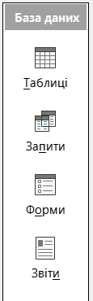
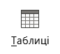

Прикладне програмне забезпечення
1. Таблиця БД має жорстко задану структуру (типи полів, ключі, обмеження), підтримує зв'язки між таблицями й запити; аркуш Excel — вільна форма для обчислень.
2. Неправильний тип призводить до помилок сортування, порівняння та обчислень (наприклад, «10» < «9» для тексту, але 10 > 9 для числа).
4. Первинний ключ однозначно ідентифікує запис; порожнє значення зруйнувало б цю ідентифікацію й унеможливило б зв'язки.
Основний об'єкт БД для зберігання даних. Складається з рядків і стовпців.
Стовпець таблиці, який містить однотипні дані. Має назву та тип.
Рядок таблиці, який містить дані про один об'єкт (екземпляр сутності).
Рис. 1. Поля (стовпці) та записи (рядки) у таблиці бази даних
Робота з базою даних у середовищі СКБД складається з послідовних етапів:
Рис. 2. Схема основних етапів роботи з базою даних у СКБД
| № | Етап | Що відбувається |
|---|---|---|
| 1 | Проектування | Визначення сутностей, атрибутів, зв'язків; побудова моделі «сутність-зв'язок». |
| 2 | Створення | Створення таблиць, опис полів, типів даних, ключів та обмежень. |
| 3 | Заповнення | Введення записів у таблиці. |
| 4 | Редагування | Виправлення, оновлення чи видалення записів. |
| 5 | Маніпулювання | Сортування, фільтрація, побудова запитів. |
| 6 | Використання | Форми для введення, звіти для друку, експорт даних. |
| 7 | Супроводження | Резервне копіювання, оптимізація, захист даних. |
У лівій частині вікна LibreOffice Base розташована панель «База даних» з основними об'єктами. Це «серце» програми — саме тут обирається те, з чим ви будете працювати.

Основне сховище даних. Саме тут створюються структури — таблиці з полями, типами даних і ключами.
Вибірка, фільтрація та об'єднання даних із таблиць за допомогою SQL або конструктора.
Зручний графічний інтерфейс для введення та перегляду даних (наприклад, анкета учня).
Документи для друку або експорту: списки, підсумки, статистика класу.
Створити таблицю можна трьома способами:
Найточніший спосіб. Вручну вказуються назви полів, типи даних, властивості, ключі. Дозволяє повністю контролювати структуру таблиці.
Покроковий діалог: обираєте типові поля (бізнес, особисті, навчальні), а система сама підбирає типи даних. Найшвидший для початківців.
Дані вводяться одразу «як у таблиці», а Base автоматично визначає типи полів. Зручно для дрібних експериментів, але менш контрольовано.

| Критерій | Відмінність |
|---|---|
| Вартість | LibreOffice Base — безкоштовний, Microsoft Access — платний (у складі Microsoft 365 / Office) |
| Платформи | Base — Windows / Linux / macOS; Access — тільки Windows |
| Простота | Access більш інтуїтивний для початківців (майстри, шаблони, підказки) |
| Формат файлів | Base — .odb; Access — .accdb / .mdb |
| Інтеграція | Base добре інтегрується з LibreOffice (Writer, Calc); Access — з Microsoft Office (Word, Excel) |
| Використання | Base — навчання, невеликі проєкти, Linux-середовище; Access — офісна робота у Windows-середовищі |
Рис. 5. Порівняльна діаграма LibreOffice Base і Microsoft Access
| № | Завдання | Результат |
|---|---|---|
| 1 | Створення бази даних | Файл Прізвище_П310_контакти.odb |
| 2 | Створення таблиці «Учні» в режимі конструктора | Таблиця з 7 полями + ключ |
| 3 | Створення таблиці «Батьки» в режимі конструктора | Таблиця з 6 полями + ключ |
| 4 | Введення даних у таблиці | 3–5 записів у кожній |
| 5 | Встановлення зв'язків між таблицями | Зв'язок 1:N через поле «Код_учня» |
| 6 | Сортування даних | За прізвищем |
| 7 | Фільтрація даних | За класом 3-А |
| 8 | Створення запиту | Запит на вибірку даних |
| 9 | Формування та завершення | Збереження файлу .odb |
| Поле | Тип даних | Властивості |
|---|---|---|
| Код_учня | INTEGER | 🔑 Первинний ключ, Автозначення (AutoValue) |
| Прізвище | VARCHAR(50) | Обов'язкове (NOT NULL) |
| Ім'я | VARCHAR(50) | Обов'язкове (NOT NULL) |
| Клас | VARCHAR(10) | — |
| Дата_народження | DATE | — |
| Телефон | VARCHAR(20) | — |
| VARCHAR(60) | — |
| Поле | Тип даних | Властивості |
|---|---|---|
| Код_батька | INTEGER | 🔑 Первинний ключ, Автозначення (AutoValue) |
| Код_учня | INTEGER | 🔗 Зовнішній ключ → «Учні.Код_учня» |
| Прізвище_батька | VARCHAR(50) | Обов'язкове |
| Ім'я_батька | VARCHAR(50) | Обов'язкове |
| Телефон_батька | VARCHAR(20) | — |
| Ступінь_споріднення | VARCHAR(20) | — |
Рис. 6. Схема зв'язку між таблицями «Учні» та «Батьки»
Прізвище_П310_контакти.odb.
Код_учня, Прізвище, Ім'я,
Клас, Дата_народження,
Телефон, Email.Код_учня оберіть тип INTEGER,
у властивостях увімкніть «Автозначення» та призначте первинний ключ.
Збережіть таблицю як «Учні».
Код_батька, Код_учня,
Прізвище_батька, Ім'я_батька,
Телефон_батька, Ступінь_споріднення.Код_батька зробіть первинним ключем (тип INTEGER, Автозначення)..odb.
| № | Критерій | Бали |
|---|---|---|
| 1 | Базу даних створено з правильною назвою | 1 |
| 2 | Таблицю «Учні» створено з усіма полями | 2 |
| 3 | Таблицю «Батьки» створено з усіма полями | 2 |
| 4 | Встановлено первинний ключ у обох таблицях | 2 |
| 5 | Введено мінімум 3 записи в кожну таблицю | 4 |
| 6 | Виконано сортування даних | 2 |
| 7 | Виконано фільтрацію даних | 2 |
| 8 | Встановлено зв'язок між таблицями | 2 |
| 9 | Завдання виконано самостійно та акуратно | 3 |
| Максимальна кількість балів | 20 | |
1. Таблиця — основний об'єкт БД для зберігання даних; поле — стовпець з однотипними даними; запис — рядок, що містить дані про один об'єкт.
2. Проектування → Створення → Заповнення → Редагування → Маніпулювання → Використання → Супроводження.
5. Первинний ключ — унікальний ідентифікатор запису. Встановлюється у режимі конструктора: виділити поле → правий клік → «Первинний ключ».
7. У меню Засоби → Зв'язки додати обидві таблиці та протягнути
зв'язок між полем Код_учня головної таблиці та відповідним
полем дочірньої.
9. У таблиці виділити стовпець → кнопка «Сортувати за зростанням/спаданням» на панелі інструментів.
10. Скористатися кнопкою «Фільтр за виділеним» або «Автофільтр» на панелі інструментів.